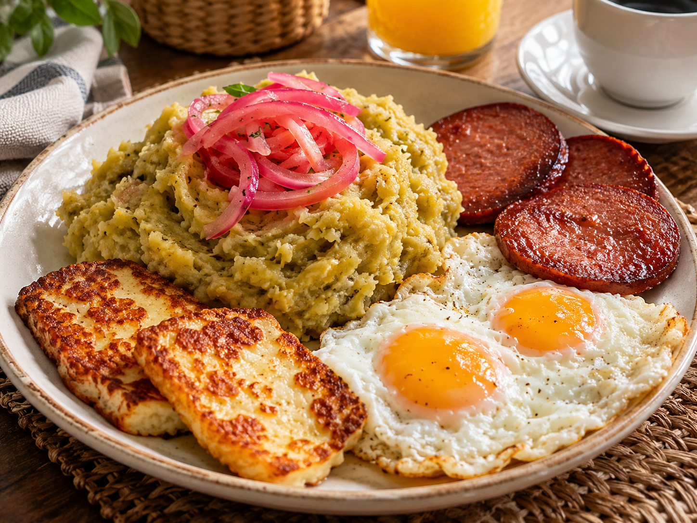

Los tres golpes is a classic Dominican breakfast made with mangú (mashed green plantains) served with Salami, Fried cheese, and Eggs. It’s a hearty, savory meal and one of the most iconic dishes in Dominican cuisine.

| Ingredient | Quantity |
|---|---|
| Mangú (mashed green plantains) | 2–3 green plantains |
| Fried eggs | 2 eggs |
| Fried Dominican salami | 2–3 slices |
| Fried cheese | 2 slices |
| Red onions | 1/2 onion |
| Butter or oil | 2 tbsp |
| Salt | 1/2 tsp |

Chicken Alfredo is a creamy pasta dish made with fettuccine, seasoned chicken, Parmesan cheese, butter, and a rich Alfredo sauce.
| Ingredient | Quantity |
|---|---|
| Fettuccine pasta | 8 oz |
| Chicken breast | 1 breast (about 8 oz) |
| Heavy cream | 1 cup |
| Butter | 2 tbsp |
| Parmesan cheese | 1/2 cup |
| Garlic | 2 cloves |
| Salt | 1/2 tsp |
| Black pepper | 1/4 tsp |
| Italian seasoning | 1 tsp |